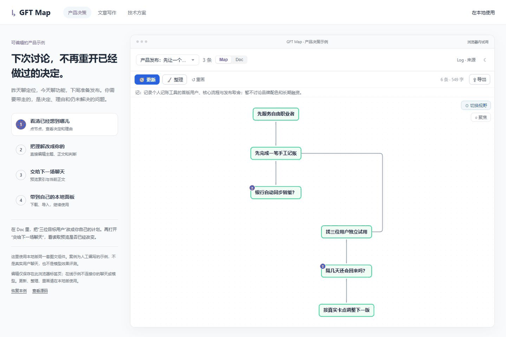

让下一次，接在这一次之后。
一份上下文，从散落的讨论里长出来，也留出人修正它的位置。
聊过很多，先看懂现在的判断。
连接一场明确的聊天，点击更新。Doc 展开当前理解，Map 看决定之间的关系。哪些已经确定、哪些仍在等证据，一眼能找到。
“这个不是结论，只是一个猜测。”
直接改主题、文稿或节点。需要时再整理，收拢重复表述；主题变了，也能根据保留的来源重新生成。
新开一场聊天，继续同一件事。
让 Agent 连接这份主题。它先读简短索引，再按任务读取当前正文。你改过的内容，成为下一次读取的版本。
